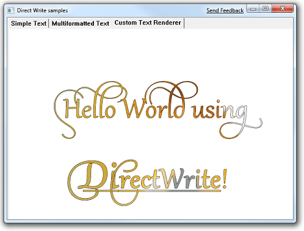
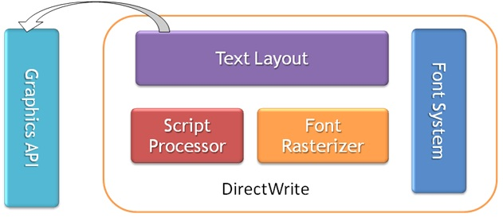

Unlike other APIs, such as GDI, GDI+ or WPF, Direct2D interoperates with another API, DirectWrite, to manipulate and render text. This topic describes the benefits and interoperation of these separate components.
This topic contains the following sections.
Moving an application from one graphics API to another can be difficult or not what you want for various reasons. This might be because you have to support plug-ins that still take the older interfaces, because the application itself is too large to port over to a new API in one release or because some part of the newer API is desirable but the older API is working well enough for other parts of the application.
Because Direct2D and DirectWrite are implemented as separate components, you can upgrade your whole 2D graphics system or just the text part of it. For example, you could update an application to use DirectWrite for text but still use GDI or GDI+ for rendering.
As applications have evolved, their text processing requirements have grown increasingly complex. At first, text was generally confined to statically laid-out UI, and the text was rendered in a well-defined box, such as a button. As applications began to be available in a growing number of languages, this approach became more difficult to sustain because both the width and height of the translated text can vary significantly between languages. To adapt, applications started to dynamically lay out their UI to depend on the actual rendered size of the text, instead of the other way around.
To help applications complete this task, DirectWrite provides the IDWriteTextLayout interface. This API enables an application to specify a piece of text with complex characteristics such as different fonts and font sizes, underlines, strikethroughs, bi-directional text, effects, ellipsis and even embedded non-glyph characters (such as a bitmap emoticon or an icon). The application can then change various characteristics of the text as it iteratively determines its UI layout. The DirectWrite Hello World Sample, which is shown in the following illustration and in the Tutorial: Getting Started with DirectWrite topic, shows many of these effects.

The layout can either position the glyphs ideally based on their widths (as WPF does), or it can snap the glyphs to the nearest pixel positions (as GDI does).
In addition to obtaining text measurements, the application can hit test various parts of the text. For example, it might want to know that a hyperlink in the text is clicked. (For more information about hit testing, see the How to Perform Hit Testing on a Text Layout topic.)
The text layout interface is decoupled from the rendering API that the application uses, as the following diagram shows:

This separation is possible because DirectWrite provides a rendering interface (IDWriteTextRenderer) that applications can implement to render text by using whatever graphics API you want. The application implemented IDWriteTextRenderer::DrawGlyphRun callback method is called by DirectWrite when rendering a text layout. It is the responsibility of this method to perform the drawing operations or pass them along.
For drawing glyphs, Direct2D provides ID2D1RenderTarget::DrawGlyphRun for drawing to a Direct2D surface and DirectWrite provides IDWriteBitmapRenderTarget::DrawGlyphRun for drawing to a GDI surface that can then be transferred to a window by using GDI. Conveniently, DrawGlyphRun in both Direct2D and DirectWrite have exactly compatible parameters to the DrawGlyphRun method that the application implements on IDWriteTextRenderer.
Following a similar separation, text-specific features (such as font enumeration and management, glyph analysis, and so on) are handled by DirectWrite instead of Direct2D. The DirectWrite objects are accepted directly by Direct2D. To help existing GDI applications to take advantage of DirectWrite, it provides the IDWriteGdiInterop method interface with methods to do the following:
Text is a set of Unicode code points (characters), with various stylistic modifiers (fonts, weights, underlines, strikethroughs, and so on) that is laid out in a rectangle. A glyph, in contrast, is a particular index into a particular font file. A glyph defines a set of curves which can be rendered, but, it doesn't have any textual meaning. There is potentially a many-to-many mapping between glyphs and characters. A sequence of glyphs that come from the same Font Face and that are laid-out sequentially on a baseline is called a GlyphRun. Both DirectWrite and Direct2D call their most precise glyph rendering API DrawGlyphRun and they have very similar signatures. The following is from ID2D1RenderTarget in Direct2D:
STDMETHOD_(void, DrawGlyphRun)(
D2D1_POINT_2F baselineOrigin,
__in CONST DWRITE_GLYPH_RUN *glyphRun,
__in ID2D1Brush *foregroundBrush,
DWRITE_MEASURING_MODE measuringMode = DWRITE_MEASURING_MODE_NATURAL
) PURE;
And this method is from IDWriteBitmapRenderTarget in DirectWrite:
STDMETHOD(DrawGlyphRun)(
FLOAT baselineOriginX,
FLOAT baselineOriginY,
DWRITE_MEASURING_MODE measuringMode,
__in DWRITE_GLYPH_RUN const* glyphRun,
IDWriteRenderingParams* renderingParams,
COLORREF textColor,
__out_opt RECT* blackBoxRect = NULL
) PURE;
The DirectWrite version keeps the baseline origin, measuring mode and the glyph run parameters and includes additional parameters.
DirectWrite also enables you to use a custom renderer for glyphs by implementing the IDWriteTextRenderer interface. This interface also has a DrawGlyphRun method, as the following code example shows.
STDMETHOD(DrawGlyphRun)(
__maybenull void* clientDrawingContext,
FLOAT baselineOriginX,
FLOAT baselineOriginY,
DWRITE_MEASURING_MODE measuringMode,
__in DWRITE_GLYPH_RUN const* glyphRun,
__in DWRITE_GLYPH_RUN_DESCRIPTION const* glyphRunDescription,
__maybenull IUnknown* clientDrawingEffect
) PURE;
This version includes more parameters that are useful when you implement a custom text renderer. The final parameter is used for application-implemented custom drawing effects. (For more information about client drawing effects see How to Add Client Drawing Effects to a Text Layout.
Each glyph run starts at an origin and is put on a line starting from this origin. The glyphs are changed by the current world transform and the selected text rendering settings on the associated render target. This API is generally called directly only by applications that do their own layout (For example a Word Processor) or by an application that has implemented the IDWriteTextRenderer interface.
Direct2D provides glyph level rendering services through DrawGlyphRun. However, this requires the application to implement the details of rendering, which basically reproduces the functionality of the DrawText API from GDI on its own.
Therefore, Direct2D provides APIs that accept text instead of glyphs: ID2D1RenderTarget::DrawTextLayout and ID2D1RenderTarget::DrawText. Both methods render to a Direct2D surface. To render to a GDI surface, IDWriteBitmapRenderTarget::DrawGlyphRun is provided. But this method requires a custom text renderer to be implemented by the application. (For more information, see the Render to a GDI Surface topic.)
An application's usage of text typically starts simple: put OK or Cancel on a fixed-layout button, for example. However, over time, it becomes more complex as internationalization and other features are added. Eventually many applications will have to use DirectWrite's text layout objects and implement the text renderer.
Therefore, Direct2D provides layered APIs that enable an application to start simply and grow more sophisticated without having to back-track or abandon their working code. A simplified view is shown in the following diagram:
DrawText is the simplest of the APIs to use. It takes a Unicode string, a foreground brush, a single format object and a destination rectangle. It will lay out and render the whole string within the layout rectangle, and optionally clip it. This is useful when you put a simple piece of text in a piece of fixed-layout UI.
By creating an IDWriteTextLayout object, an application can start measuring and arranging the text and other UI elements, and support multiple fonts, styles, underlines and strikethroughs. Direct2D provides the DrawTextLayout API that directly accepts this object and renders the text at a given point. (The width and height are provided by the layout object). In addition to implementing all the expected text layout features, Direct2D will interpret any effect object as a brush and apply that brush to the selected range of glyphs. It will also call any inline objects. An application can then insert non-glyph characters (icons) into the text if it wishes. Another advantage of using a text layout object is that the glyph positions are cached in it. Therefore, a large performance gain is possible by reusing the same layout object for multiple draw calls and avoiding recalculating the glyph positions for each call. This capability is not present for GDI's DrawText.
Finally, the application can implement the IDWriteTextRenderer interface itself and call DrawGlyphRun and FillRectangle itself, or any other rendering API. All the existing interaction with the Text Layout object will remain unchanged.
For an example of how to implement a custom text renderer see the Render Using a Custom Text Renderer topic.
Adding DirectWrite to an existing GDI application enables the application to use the IDWriteBitmapRenderTarget API to render glyphs. The IDWriteBitmapRenderTarget::DrawGlyphRun method that DirectWrite provides will render in solid color to a memory DC without requiring any additional APIs, such as Direct2D.
This enables the application to obtain advanced text rendering features such as the following:
An application moving to Direct2D will also obtain the following features:
To efficiently support hardware acceleration, Direct2D uses a slightly different approximation to Gamma correction called alpha correction. This does not require Direct2D to inspect the render target color pixel when rendering text.
This topic explains the differences and similarities between Direct2D and DirectWrite and the architectural motivations for providing them as separate, cooperative APIs.
Â
Â